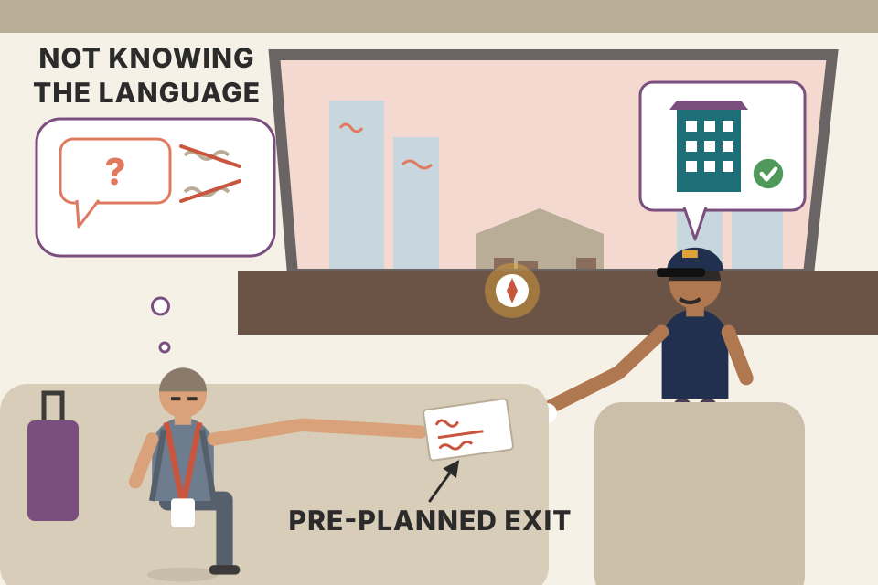
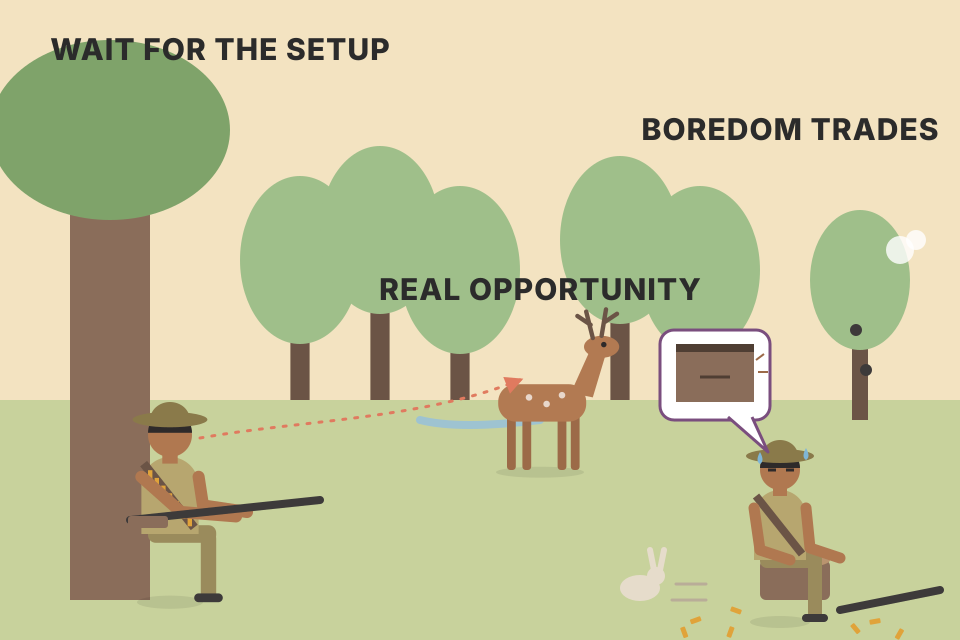
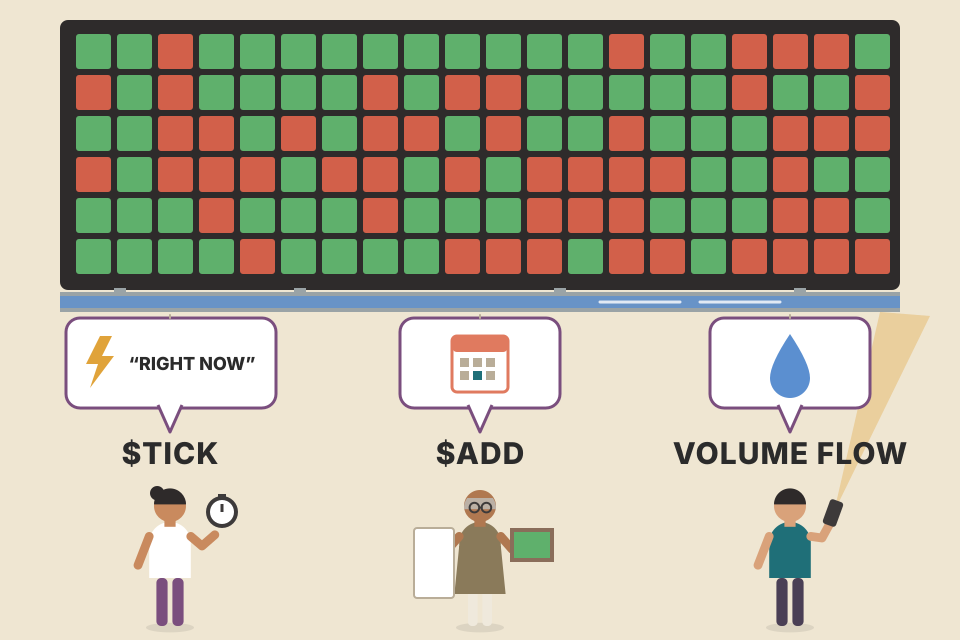
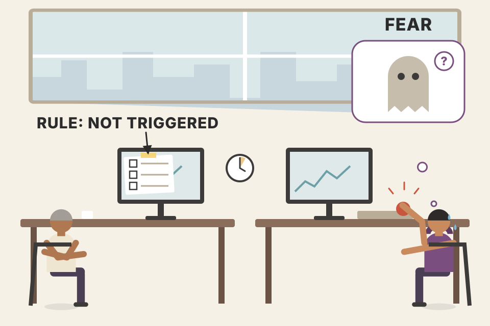

Price tells you where the market went. The internals ($TICK, $TIKI, $TRIN, put/call ratio, sector list, volume, $VOLSPD, $VIX, AUDJPY) tell you who is pushing, how hard, and whether they will keep pushing. This page covers the whole chapter in the book's order, with every rule and number, a live chart for each idea, and what is going on underneath. All charts run on a simulated trading session: one hidden buying/selling pressure drives a few thousand made-up stocks, and every internal is computed from them. The day shapes are scripted to echo the book's figures; they are not real market data.
Carter's idea: every day offers long and short setups, but on most days only one side (or neither) deserves your money. A handful of internals, read in a fixed order, tell you which. Each row below is a part of the chapter.
The chapter opens with a Japanese proverb: you don't get the tiger cubs without going into the tiger's den. Carter first wrote this chapter for day traders of stock index futures and ETFs, but he now uses the same tools for his swing trades in stocks and options. They keep him in a position when his brain wants to bail, and get him out early when he is plainly wrong. That protects him from bigger losses and from his own ego (his joke: holding a loser because it will surely turn around is the trader's version of famous last words).
The internals answer the questions every trader asks during the day: should I worry about this sell-off? Bail on my longs or add? Is a crash coming? Is a violent short-covering rally about to start? Will it be a choppy day? For end-of-day traders and long-term investors the minute-to-minute swings don't matter, but it still pays to recognise the extreme readings. He was writing in February 2018, just after a few leveraged short-volatility funds blew up; the internals got his group out well before the meltdown and into the big swings after it (sections 02–03).

In 2005, as a consultant for the Chicago Board of Trade, Carter visited Taipei, Hong Kong and then Tokyo. At 5 a.m. he toured the Tsukiji fish market (480 kinds of seafood, about $15 million sold a day), then had to get back to his hotel to speak at a conference. The driver didn't understand "Imperial Hotel". Remembering James Clavell's novel Shogun, he tried "Taiko Hoteru", and it worked. Two lessons: (1) if you don't speak the language you can get by, but at a disadvantage; in trading that means not understanding the moves on your screen and getting whipsawed. (2) Never go out without a homing beacon (a hotel card written in the local language); in trading that means a pre-planned exit.
Carter's one-line summary: The internals are the language of the market.
(pdf p109). The catch is that there are a lot of them, which invites analysis paralysis. Two things to remember:
Exact binomial maths, no simulation. Each indicator is a fair coin: bullish or bearish with equal odds, so none has any information. With 10 of them, you find at least 3 that "agree with you" 95% of the time, whatever you believe. The chance that most of them agree never rises above 50% (exactly 50% for an odd count, a bit less for an even one, because ties don't count). More screens give a biased mind more raw material, not more truth. This is Carter's argument for a few internals with fixed rules.
Not understanding this material and then day-trading stock indexes, he says, is like trying to qualify for the Olympic 100-metre backstroke without knowing how to swim. Most of his intraday trading is in instruments that the internals describe, because there's a ton of live data showing what is happening behind the scenes in stocks. The euro has nothing like it. Many traders only vaguely understand these tools and many beginners don't know they exist, which is money waiting to be taken by those who do. Reading them tells you, every day:
| The internals tell you… | Where on this page |
|---|---|
| which days to ignore all short setups | TICK rule 5 (05), TRIN rule 2 (07), put/call rule 1 (09) |
| which days to ignore all long setups | the same rules, mirrored |
| which days to use setups that work in choppy markets | chop tests (11), conflicting internals (12) |
| which days to watch for huge reversals up or down | extreme days (02, 03), TRIN close (07), VIX (13) |
Some of his best days start with his first trade or two getting stopped out: he begins on the short side, gets stopped, sees how strong the internals are, and simply reverses and goes with the flow.
An index price is one number: the weighted sum of hundreds of stocks. It hides how it moved. A 0.5% rise can come from ten giant stocks while 2,000 others fall, or from almost everything rising on heavy volume. The internals are counts and ratios over the individual stocks (how many tick up, how many are up on the day, where the volume goes, what options people buy). They measure participation and conviction, which is what decides whether a move keeps going.
order_flow.md note ends with "use it as a filter on a strategy that already has an edge, not as the edge itself". That is exactly how Carter uses the internals: to choose which setups to take today.Before the individual tools, Carter shows an extreme day, because once you know what triggers an extreme move, normal days and normal readings make more sense. Figure 5.1 is Friday 9 February 2018: an extreme short-covering rally in the middle of the day. These are his favourite days. When short sellers get scared they will buy back at any price; add traders opening new longs and the market shoots up fast, against a background of "bad news".
| From 12:40 p.m. CST, 55 minutes until the first real pause | Move |
|---|---|
| S&P 500 | +79 points |
| Nasdaq | +230 points |
| Dow Jones | +736 points |
| AMZN | +$77 |
In a quiet market moves like these take months. Seeing early that this kind of move is setting up, and that it will last, is a huge edge for a full-time trader. His chart stacks seven panels: $TICK with a 5-period moving average, $VIX, $ADD, $PCVA (put/call), $VOLSPD, $TRIN and SPY. The simulation below has the same stack. Step through his ten points:
Usually the news is all negative on days like this, so the rally seems to come from nowhere. As a bonus, short-covering rallies usually make one more push higher into the close after their first pause; in the book the TICK made a higher high and the VIX kept falling. Holding a trade like this is one of the hardest parts of trading: learn to recognise the winners, then ride them until the panic is over.
The 5-period moving average on the 5-minute TICK. He doesn't always use it, but it helps newer traders and fast days: it shows where the TICK is "hanging out". A quick spike over +1,000 is very different from staying up there. The average rarely crosses +500 or −500; when it does, there is sustained pressure. At point 2 the ticks spiked to +600 but the average stayed below zero. After the turn, the average crossed +500 and stayed there for 30 minutes: very rare, huge buying conviction, mostly shorts panicking out. Before the turn, the average spent a lot of time below −500, and in that situation he never buys the dip.

Carter compares the job to sitting under a tree with a loaded gun, waiting for dinner to walk past. If you shoot at mediocre chances out of boredom, you spend your bullets: real capital and mental energy. When the real opportunity finally walks by, you have no money left to trade with, or you're too tired and distracted to see the signs, and only notice once the move is over.
A short seller is a forced buyer later: to close, they must buy. When many people are short (put/call above 1.0 all day here), the market sits on a pile of future buy orders, many as buy-stops above the price. The internals show the moment the selling dries up (the TICK's higher low while price makes a lower low) and then the moment buying overwhelms (TICK holding high, 5-bar average over +500, VIX falling, volume pouring into advancers). Price is the last to show it. Section 09 simulates the stop cascade itself.
Figure 5.2 is Monday 5 February 2018, a few days before the rally above. Carter drops the other internals to zoom in on the two he finds most important: the $TICK and the $VIX. High-to-low that day: S&P 500 −168 points, Nasdaq −426, Dow −1,786, AMZN −139, the biggest moves since the late-August 2015 mini flash crash.
It had the classic set-up of a panic day: a Monday (a favourite day for extreme moves), after a Friday when the S&P 500 fell 65 points, broke several support levels and closed at its lows, leaving traders nervous all weekend. Step through his eight points (the book's text once expands "SMA" as "separately managed account"; it means the simple moving average):
When there's real panic, the VIX moves first, because traders buy VIX contracts to hedge. That day the VIX futures started around 12, already high after a record-calm January spent between 10 and 11; by noon CST they had pushed through 15 and then accelerated. Carter's rule of thumb: when the VIX keeps making higher highs while the TICK stays negative, something is blowing up. Don't look to the news for the reason; they don't know yet. You never buy the dip on days like this.
What was blowing up: everyone who had been making money by shorting volatility (betting the VIX would stay low) was being squeezed. Inverse volatility products such as SVXY (ProShares Short VIX Short-Term Futures ETF) and XIV (VelocityShares Daily Inverse VIX Short-Term ETN) lost about 95% of their value overnight, bankrupting traders and hedge funds who had been minting money for a year. SVXY fell from 105.60 to 71.82 on Monday; on Tuesday its first trade was 11.70. Figure 5.3 (weekly) shows SVXY's long climb from 2015 into 2018 while the VIX drifted down along a falling trendline, then the VIX breaking that line and SVXY collapsing: too many people in the same trade, all wanting out at once.
The 105.60, 71.82 and 11.70 prices are the book's; the points between them are only sketched. A stop order becomes a market order once the price trades through it, and the first trade on Tuesday was 11.70. So every stop between 71.82 and 11.70 filled near 11.70. The stop limited nothing.
A −1× daily product aims to return minus one times its index's move each day. If the index of short-term VIX futures rises 96% in a day, the product loses about 96%; a rise of 100% or more wipes it out. Slide it:
XIV's issuer shut it down after this episode, and ProShares later cut SVXY's target from −1× to −0.5×. The lesson Carter draws is simpler: the internals don't care about the reason. They see the behaviour (someone is blowing up) and say so while it is happening; most traders only understood it after the close.
Extreme days are where the big money is, but the internals help on quiet days too. His list:
| # | Symbol | What it measures |
|---|---|---|
| 1 | $TICK | Buying vs selling pressure and conviction on the NYSE (and other equity markets): stocks whose last trade was an uptick minus those on a downtick. His main tool; a few tick relatives come later. |
| 2 | $ADD | Number of advancing stocks minus number of declining stocks. |
| 3 | $VIX | The market's expectation of 30-day volatility; the "fear index". |
| 4 | $PCVA | Combined index + equity put/call ratio. |
| 5 | $VOLSPD | Volume trading above yesterday's close minus volume trading below it (S&P 500 up-down volume). |
| 6 | $TRIN | The Arms Index. In this list he describes it loosely as advancers divided by decliners; the full formula (section 07) also divides by advancing over declining volume. |

Each square is a stock. $TICK asks "right now, how many squares just ticked green vs red?" $ADD asks "since yesterday's close, how many are green vs red?" $TRIN and $VOLSPD ask "where is the volume going?" Same stocks, different questions.
Put herding at 0 and pressure at 0: the TICK hovers within about ±100, because 2,800 independent coin-flips almost never come out lopsided (the spread of up-minus-down is about √2,800 ≈ 53). A reading of ±1,000 needs two-thirds of all stocks ticking the same way at once, so it can only come from a shared push: index arbitrage, a program, panic, a squeeze. That's why the TICK measures conviction. Turn herding up and the TICK swings wildly even with zero average pressure: that's the noise Carter tells you to ignore (rule 1, section 05). Now push "volume leans to advancers" with pressure at 0: $ADD hardly moves, but $TRIN drops below 1 and up-volume jumps. Volume can tell a different story from the head-count.
Of all the internals, the NYSE $TICK is Carter's favourite. If the market is a party, the TICK is the DJ: it shows the immediate mood of the crowd, whether it's a rave, people chilling over cocktails, or a fire in the building. It counts NYSE stocks whose latest trade was higher than the one before, minus those whose latest trade was lower. There are TICKs for the Nasdaq, S&P 500, Russell 2000 and others; he watched them all and found they basically move together, so watching one beats watching six. Alerts work well on it, so you don't need to stare.
He starts paying attention beyond +600 or −600. If readings exceed those levels and stay out there, conviction is in the air, and the bigger the number the stronger the push: a sustained move is underway. With sustained readings of +800, he is comfortable if long; if short, he starts to suspect he's on the wrong side and, if the readings hold, can get out before his stop is hit. How much he cares depends on the trade: positions built on weekly charts don't get managed off one day's TICK, but short swing trades lasting a couple of days do.
The key skill is telling a spike from conviction. A spike is the usual case: quiet market, then boom, an extreme reading for a few minutes, then back to zero. No big deal. Conviction is a spike that lasts a few minutes, eases back a bit, then reaches a new, more extreme level. Example from the book: he owns Facebook (FB) calls; the TICK hits −1,000, stays a few minutes, eases to −500, then rolls over to −1,200. He closes the calls even though his stop is nowhere near. The DJ says the party has turned sour; time to leave.
Grey band = the ±400 noise zone. Shaded beyond ±1,000 = the action zone. The faint amber bands are 400–600: the gap between "noise" and "pay attention". The first hour is greyed because rule 5 only counts after 10:30 a.m. ET.
This applies to day trading index futures, options on SPY and QQQ, and their component stocks. Readings that extreme with shallow pullbacks say loudly that you're right or wrong. Carter used to take this personally, shorting all the way up a rally sure it was a bubble. The TICK taught him to drop his convictions and cut trades before his ego destroyed his account. Don't fight the mood of the party: if everyone is dancing, dance; if they're holding a séance and the candles are going out, screaming on the table will get you hurt. A bonus: exiting early on this signal often saves you from a full stop-loss, which improves your reward-to-risk.
He is emphatic: he never exits early just because he thinks he's wrong. What he thinks has nothing to do with what happens next. He sticks to the original plan unless a specific, measurable event happens, and a sustained TICK of +1,000 or −1,000 is one. Either the market is hanging out at that level or it isn't. No gut feel, no interpretation (Ch.2 covered how badly people decide while in a trade).
Why he cares so much: most traders are terrible at exits. Visiting traders sit next to him for a week of live trading. The first two days he just watches. He says you learn more about a person in one day of watching them trade their own money than in five years of conversation: the polite front lasts about 12 minutes before the real personality comes out; sometimes, he says, he meets Mr. Hyde. Repressed emotions look for an outlet, and trading is often the only place they get heard. He recommends David R. Hawkins' Letting Go: The Pathway to Surrender. People manage exits by how they feel, and differently when they're down on the day than when they're up, without noticing.

Steve says he'll follow Carter's trade, enters at the same moment, and five minutes later sells half. The stock is up 20 cents; the target is $2.00, where they had agreed to sell half and trail the stop. Steve's reason: the ticks dropped. They were at −350 and had touched −650. The rule needs −1,000, a bounce, and a new low. No rule fired; Steve was nervous and pressed the button. Carter's aim in these talks is to get the trader to admit the real reason (fear, excitement) because the ones who are honest about it can work on it ("Trading Therapy 101"). He separates fear of the unknown, which destroys, from risk of the unknown, which can be controlled.
Next he watches whether the ticks get beyond +1,000 or −1,000, the most important level of the day, for two reasons:
Isn't that the opposite of rule 2? No: most high readings are short-lived and offer a fade. The skill is recognising when it is turning into something bigger: shallow pullbacks, higher readings that hang out at those levels, and the 5-period average crossing 500.
His setup (Fig 5.4, 29 March 2005). A 5-minute TICK chart in TradeStation; the interval doesn't matter, as long as one screen shows a full day. (Book charts have white backgrounds for printing; on screen he uses black with green up and red down.) Horizontal lines at +1,200, +1,000, +800 and +600, and the same below zero.
He used to start alerts at ±600, but that meant too many, so now they start at ±1,000, the level where he acts. He can be on the phone, down the hall or in the bathroom and still hear it (he admits to entering a trade while stumbling out of the bathroom). For a while the alerts were cartoon voices, Daffy Duck celebrating at +1,000 and the Wicked Witch melting at −1,000; now they're plain beeps. Use a bar or candlestick chart for alerts. A line-on-close chart is useful for seeing the TICK roll over or "hook", but it is drawn only from bar closes, so it misses the highs and lows that set off alerts.
Uses the same simulated day as the chart above (change it there). Red dots are bars whose high or low crossed an alert level while the close didn't: a line chart never fires those.
Reading Fig 5.4. A typical sloppy, choppy day: the readings stay mostly between +400 and −400. At point 3 there's a quick move to +800, a retest of zero, then a quick thrust toward +1,000: a very common pattern that leads to false breakouts and a quick return to the chop. Don't chase moves without conviction. From about 10:30 a.m. to 12:30 p.m. EST nothing happened (the ticks twitched like a fresh-caught tuna on a deck). Around 1:30 p.m. the ticks hit −800 and later −1,000, almost a mirror of the morning. Figure 5.5 lays the Dow futures (YM) over the same TICK. Step through his seven points:
On rare days the market rockets and keeps going, or gaps down and keeps selling. The TICK then gives consistent extreme readings, usually around 1,200 to 1,400. He doesn't fight them. His last TICK rule applies after 10:30 a.m. EST and all day:
Charts show whether prices are going up or down; they can't tell you whether the pressure behind it is fleeting or relentless. The TICK can. Update for swing trading: on days when the TICK keeps hitting +1,000, he uses pullbacks of the TICK to the zero line as entries, for new longs or to add. Example: he holds Alibaba (BABA) calls and planned to add at certain prices, but the TICK says the market is about to take off, so he buys the rest of his calls on a TICK pullback to zero instead of waiting for his price. The mirror: on days of repeated −1,000 readings, rallies of the TICK to zero are shorting chances. It also keeps you in a trend: if he's short and every TICK rally to zero gets pushed back down, he stays short until a +600 reading appears. This matters most on the occasional runaway day when the S&Ps move 30 points or more. Tick the "zero-line pullback" box above on a trend day to see those entries.
The TICK is a snapshot of order flow across ~3,000 stocks. Most of the time stocks tick up and down for their own reasons and the count cancels out near zero (section 04). Index arbitrage and program trading change that: when the futures move, arbitrage desks buy or sell baskets of all the stocks at once, so many stocks tick the same way at the same moment. A brief extreme is one basket hitting the market: once it's done, there's nothing behind it, so fading it works. A sustained extreme means wave after wave of baskets, i.e. a large player or a crowd that isn't finished. That's why "how long it stays" matters more than "how high it gets", and why the 5-bar average, a crude measure of "how long", is useful.
backtest_results_summary.md). Rule 5 is a natural filter to test on it (beyond the book, untested): only take ORB longs when a breadth count of Nifty stocks has been positive most of the morning, and only shorts when negative.The TIKI (TradeStation symbol $TIKI) works like the TICK but counts upticks minus downticks across only the 30 Dow Jones Industrial Average stocks. Because it follows so few stocks, it's the first thing to fire when a buy or sell program hits. TIKI charts look like pure noise (Fig 5.6), so the trick is alerts, set like the TICK's: at +26, +28 and +30, and −26, −28 and −30. Small programs reach 26, medium ones 28, massive ones 30, meaning all 30 Dow stocks moving the same way. Those readings are rare and mark significant, sustained buying or selling.
With no program, the 30 stocks behave like 30 coins: the chance of a reading of ±26 or more by luck is about 2 × (435 + 30 + 1) ÷ 2³⁰ ≈ 0.0000009. So a 26 is never random: something hit most of the Dow at once. Real stocks are correlated, so ±20 swings do happen often (Fig 5.6), which is why the alerts start at 26. The TIKI fires faster than the TICK simply because 30 stocks reach "all the same way" much more easily than 2,800 do.
Surprisingly, he doesn't use the TIKI for exits. If he's short and the TIKI hits +28, he's probably wrong, but he waits for the TICK to reach +800 before getting out, because programs can be over in a blink and make the TIKI erratic.
Figure 5.7 shows the TIKI on 29 March 2005 (the same day as the TICK above). It looks all over the place, but has real value. Step through his eleven points (buy programs ▲, sell programs ▼ along the bottom/top):
He tallies where most programs are hitting: mostly buys or mostly sells? Most of the time the market chops sideways. If most programs are buys pushing to new highs, he uses the quiet, selling moments to get long, entering before the next leg instead of chasing it. The pivot setups in Ch.8 work well for this.
The TRIN ($TRIN), also called the Arms Index after its creator Richard W. Arms, measures how fast volume flows into advancing versus declining NYSE stocks:
Rearrange the fraction and the TRIN becomes average volume per declining stock ÷ average volume per advancing stock. So it isn't about how many stocks are up; it asks where the heavy trading is. TRIN 0.6 means the average advancer trades about 1.7× the volume of the average decliner: the conviction is on the buy side. Notice it's upside-down compared with most indicators: a falling TRIN is bullish. Try the second preset: fewer stocks up, but more volume in them, gives a TRIN below 1.
Most teaching material says a TRIN above 1.0 is bearish (consider shorting) and below 1.0 is bullish (consider buying). Carter calls that annoying and misleading.
A reading of 1.50 looks bearish, but if the TRIN started the day at 2.00 and an hour later 1.50 is its low, that's bullish: volume is flowing into advancing stocks and buying pressure is sustained. A reading of 0.85 looks bullish, but if it opened at 0.45 and two hours later 0.85 is the high, that's bearish.
Figure 5.8 (Dow futures, 29 March 2005, the same day as the TICK and TIKI). Step through his six points:
Figure 5.9: a week of TRIN patterns (22–28 February 2005, 15-minute bars).
Five simulated days scripted to follow the same five shapes (D1–D5). The readout applies "rising TRIN → no longs, falling TRIN → no shorts" to each day.
The most bullish days are gap-ups where the TRIN opens low, around 0.50, and stays there all day. It can't trend much lower because it can never reach zero, so it looks like a sideways consolidation, and that's extremely bullish: ignore all shorts and treat a breakout to new highs as a buy. The key is simply whether the TRIN is making new highs or new lows for the day; when it is, ignore the opposite setups. Some people call 1.50 "oversold" (look for a bounce) and 0.50 "overbought" (look for a drop). Carter isn't a fan of overbought/oversold on most indicators, and intraday TRIN is no exception: the biggest rallies happen when the TRIN hovers under 0.50 all day. Something overbought doesn't have to reverse. For reversals he uses price action only (later chapters).
The close is different. Where the TRIN closes is useful for spotting real extremes, which are rare, about a dozen a year.
The next-day moves aren't necessarily big, but they usually go the other way, so after a close above 2.0 he favours long setups and ignores shorts the next day. The interesting case: if the market can't rally the day after a 2.0 close, it's in deep trouble and set up for a major slide. Figure 5.10 (daily TRIN and Dow futures, first week of July 2004):
| Date | TRIN close | Next day | What followed |
|---|---|---|---|
| 1 Jul 2004 | 2.80 | tried to rally early, collapsed, closed lower | Dow lost 673 points before bottoming on 6 Aug 2004 |
| 6 Jul 2004 | 2.12 | Dow managed a rally | short-lived |
| 4 Jan 2005 (2nd trading day of 2005) | 2.53 | couldn't rally | sold off 410 points over the rest of the month |
The TRIN is a ratio, so it lives between 0 and infinity with 1.0 in the middle. A move from 1.0 to 2.0 is the same size as a move from 1.0 to 0.5, just the other way: both are one doubling (log₂ = ±1). The readout shows that distance. Carter's lower trigger is 0.60 rather than 0.50; Figure 5.10 itself draws its lines at 2.00 and 0.50. The "80%" and "about a dozen times a year" are Carter's figures; the book gives no sample size or test period, so treat them as his experience, not a measured statistic.
The TRINQ ($TRINQ) is the same calculation for Nasdaq stocks, and the same rule applies: only its trend matters. Figure 5.11 adds the TRINQ and the Nasdaq to the 29 March 2005 chart: as the TRINQ rose, the Nasdaq fell. He puts more weight on the TRIN but likes to see the Nasdaq side. Sometimes the TRINQ leads, making new highs or lows before the TRIN. When the TRINQ is mixed and the TRIN is trending, he follows the TRIN. The strongest moves come when both trend together.
NYSE and Nasdaq stocks are different crowds (in 2005, older industrials and financials vs tech). When both TRINs trend the same way, volume is leaning the same way across the whole market: broad conviction. When only one moves, the pressure is in one corner and less reliable. That's also why the sector list (section 10) looks for participation from key groups.
What would you pay to know what everyone else in the market is doing? Carter jokes he'd even let a broker charge him $25 a round turn on an E-mini contract for it. No secret report exists, but the put/call ratio (TradeStation $PCVA; "PC" below) is as close as you'll get. It compares how many puts are bought with how many calls: put volume ÷ call volume. Buying a put is a bet the market falls; buying a call, a bet it rises.
Book examples: 50,000 puts and 100,000 calls → 0.5. 125,000 puts and 85,000 calls → 1.47.
| Ratio | Usual level | Who drives it |
|---|---|---|
| Equity put/call | generally very low | retail traders, who favour the long side (more call buying) |
| Index put/call | usually very high | institutions buying puts to stay hedged against sudden drops |
| Combined equity/index | in between | both groups: the best gauge of what all participants think and where they're placing bets. This is the one Carter watches intraday. |
The 100-trader thought experiment. Imagine the market is exactly 100 people, all bearish, all already short (stocks, ETFs, index futures, puts). Now there's nobody left to sell. With no selling pressure, the market drifts up, until it reaches the first stop orders those shorts placed. Some use tight stops, some medium, some wide. The tight stops go first; that short covering is buying, which pushes price into the medium stops, which pushes it into the wide ones, until all are gone. Now the 100 turn bullish and buy stocks, futures and calls. Once they're all in, there's nobody left to buy, the market drifts lower, hits the tight sell-stops, and the same chain runs downward. A vicious cycle. Real markets are never 100% one way, but the amount of bullish and bearish bias swings constantly, and markets move in a way related to this simplified story.
A toy model (beyond the book). Each dot is one short seller's buy-stop, placed tight (0.3–0.8 above the start), medium (1–2) or wide (2.5–4); waiting stops sit just ahead of the price, fired ones turn grey. The fewer sellers are left, the faster price drifts up; the sellers that remain lean against the rally; each stop that fires is a forced buy that pushes price on. Try 50, 60, 70 and 90 bears and press run to the end. Pooled over 30 random runs of this model: 50 bears fire no stops, 60 fire about 12% (a few tight ones, then it fizzles), 70 about 78%, and 80 or more clear every stop. The tipping point is the model's, not a market measurement; the shape (nothing, then a runaway once enough shorts are crowded in) is Carter's story.
Above 1.0 means extreme bearishness and heavy put buying, which (by the story above) puts a floor under the market. Not instantly: the market doesn't stop falling the moment the ratio hits 1.0 and then rally. It's a process, and a visible support level forms because there are too many bears and too many buy-stops overhead. These readings usually come after many down days in a row or after bad earnings or economic news turns everyone bearish. Often the market keeps falling until the PC gets above 1.0.
Below 0.60 means extreme call buying, a ceiling: too many bulls, few people left to buy, and lots of sell-stops sitting below. This usually follows many up days or great-looking news, plus late buyers chasing for fear of missing out. Often the market keeps rallying until the PC drops under 0.60.
Figure 5.12 (15-minute Dow futures over the PC, 22–28 February 2005, the same week as the TRIN in section 07):
| Day | Put/call | What happened |
|---|---|---|
| 22 Feb | low most of the day, dipped under 0.60 | bullish crowd, stops below → Dow sold off more than 120 points to clear them |
| 23 Feb | a little time above 1.0 | bearish crowd, stops above → enough to start a modest rally into the close |
| 24 Feb | worked up to an extreme high reading | gapped down and stayed weak early, but with so many bears and buy-stops overhead it had little choice but to rally |
| 25 Feb | started low, quickly rose, sat near 0.80 | (neutral) |
| 28 Feb | started low, nearly an hour under 0.60 | everyone excited by the 25th's rally and buying calls → market drifted lower and took out the new sell-stops |
The PC doesn't spend long in the extreme zones, but it reaches them often enough to matter. Most of the time it sits in what he calls neutral territory, 0.70–0.90, where it isn't a factor. Then he watches its trend:
| PC rising (more puts, more shorts) | PC falling (more calls, more buying) | |
|---|---|---|
| Market rising | People don't believe the rally and short into it. Their stops become fuel for the next leg up. Confirmed. | People believe it and chase it. A sign the rally has run its course. |
| Market falling | People get scared and chase it lower with puts. A sign the decline is about to end. | People buy the dip with stocks and calls, placing sell orders underneath. Fuel for more downside. Confirmed. |
Figure 5.13 (29 March 2005 again). Step through his seven points:
Figure 5.14, the next day (30 March 2005). With the market closing near its lows on the 29th, people woke up bearish; on the gap up they shorted aggressively and bought puts for the "inevitable" drop, and the PC went very high. The market closed more than 140 points higher than the day before.
Practical notes. He largely ignores the PC until after 10:00 a.m. EST: many listed stocks take time to open and many overnight option orders take time to fill, which makes early readings erratic. He also ignores it on options expiration day, when option-specific activity distorts it. Many data feeds didn't carry it when he wrote: on TradeStation you need the OPRA permission; it wasn't available on eSignal; and the CBOE website's "Market Data" section has it free, updated every half hour.
The PC is a contrarian gauge because positions create future orders on the opposite side. Every short and every put bought for protection is a future buyer (a buy-stop, a cover, a hedge being lifted). Every chaser of calls is a future seller. The ratio counts those future orders. Its trend tells you whether the current move is creating fuel for itself (people fighting it) or using fuel up (people chasing it).
order_flow.md §4 lists option OI by strike as a slow India order-flow source ("big put OI = support"); that's the positioning side of the same story.The sector sorter list (SSL) shows what's going on "beneath the indexes". He lists the key sectors and has them re-sorted every few seconds by net percent change, so he sees at a glance which sectors lead and which lag.
On 1 April 2005 (Fig 5.15, a TradeStation RadarScreen of 30 sector indexes) the only sectors up were, mostly, energy, housing and gold: oil service, natural gas and oil each about +2.1% at the top, housing +0.67%, gold and silver +0.28%. Among the worst were the semiconductors (about −1.4%), with brokers (−1.04%) and banks (−0.74%) not far behind. Why these three?
Like a doctor reading a patient's chart, the list shows the market's overall health. Underneath a flat index, a couple of key sectors can be quietly weakening or firming. You can also use sector ETFs; he follows nine: XLY (consumer discretionary), XLF (financial), XLB (materials), XLP (consumer staples), XLV (health care), XLK (technology), XLE (energy), XKI as printed in the book for industrials (not in the book: the Industrial Select Sector SPDR trades as XLI, used below), and XLU (utilities).
Simulated percentages, not the book's. Highlighted rows are the big three. Try: index +0.8% with the big three "lagging" (rule 1 calls it suspect); then index 0.0% with the hidden tilt at −40 (rule 2 sees mostly red under a flat index).
An index can rise on a few heavyweights while most of the market sags. Sectors are a middle layer between "one index number" and "3,000 stocks": a quick read of breadth plus leadership. Banks and brokers matter because credit and trading activity sit underneath almost every other sector; semis matter because they're widely owned and very sensitive to growth expectations. When the leaders aren't participating, the move rests on a narrow base.
Choppy days, when the indexes spend most of the day in a slow, narrow range, are among the most frustrating. Most traders only realise it's choppy halfway through the day, from the chart and from their pile of losing trades. Some setups work great in choppy markets (his favourites: pivots, Ch.8, and tick fades, Ch.9); relentlessly trading a trend setup on a choppy day gets you killed. So he wants to know the type of day as early as possible.
His method: a 5-minute chart of the E-mini S&P 500 futures (ES) with only volume on it, and a horizontal line at 25,000 contracts. In Figure 5.16 (27 September 2011) most of the first hour's bars were over 25,000, which is typical because the first hour is hectic. The market drifted quietly higher most of the day and eased back into the last hour. Once volume spiked above 25,000 and stayed there, the bears were moving in, and the S&Ps fell 30 points into the close. Volume measures conviction: had that sell-off come on light volume, it would have been a probe likely to fail, and a buying chance for a rally into the close. With volume behind it, it's a strong continuation; don't fight it, go with it.
Figure 5.17 is the TICK that same day. For most of the day it stayed above zero, often hitting +1,000: pullbacks to zero were buys and moves back to +1,000 were places to sell. Once volume jumped and the TICK printed its first −1,000 into the close, the character of the market changed: every rally back to zero was rejected (a shorting chance) and the TICK reached −1,200.
Then pick setups to match. On choppy days it's best to fade extreme TICK readings; on trending days it's better to go with extreme TICK readings by fading the moves back to the zero line (more in Ch.9).
The rule works if heavy early trading really does go with trending days. That link has to be measured on real data; it can't be assumed. This toy model shows how the hit rate depends on it: each simulated day is randomly "trend" or "chop", its early volume is drawn around a level that differs between the two by an amount you set, and the six-bar vote picks a type.
At 0 the rule is a coin-flip. The 25,000 number itself is tied to its era: Carter says it was 10,000 when he first wrote the chapter (section 13). For Nifty futures you'd set the line from your own data, for example at the median first-30-minute bar volume of recent months.
indicators/trend_vs_sideways_tools.md test found that none of ER, ADX, Choppiness or MA slope predicted the next period's trendiness on Nifty 200 stocks, while Bollinger width did predict volatility. Carter's rule is a same-day, first-30-minutes version of the same question; it deserves the same kind of test before you rely on it.It's easy to drown in data, so he lays it out so his brain can take it in quickly: two columns, read top to bottom, left to right. Figure 5.18 is his screen:
In Figure 5.18 (29 March 2005) he doesn't need a price chart to know the market sold off steadily all day. Figure 5.19 (30 March 2005) is the opposite: the TRIN and TRINQ trend lower, the PC started the day well above 1.0, the TICK spends lots of time above zero, most sectors are green, and the TIKI shows many more buy programs than sell programs. On that kind of day he focuses on longs and ignores shorts. The screen also shows chop mode: when the internals contradict each other, for example the TRIN making new highs (bearish) while the TICK stays above zero (bullish). His simplest chop test: about half the sectors green and half red, as neutral as a market gets. The ES volume chart isn't on this screen for lack of room; he watches it on another monitor.
Drag the time slider to replay the day as Carter would see it. The votes are my own simple translation of his rules into numbers (beyond the book): TRIN whose latest new high (or low) of the day came within the last 2 hours = −1 (or +1); PC above 1.0 after 10:00 = +1, below 0.60 = −1; TICK above zero ≥90% of the time after 10:30 = +1 (≥70% = +½); sectors 9+ green = +1; TIKI program balance = ±½. Strong votes on both sides = chop mode.
Each internal measures a different thing: TRIN = where volume goes, PC = how the crowd is positioned, TICK = immediate pressure, sectors = breadth and leadership, TIKI = program activity. When they agree, the pressure is broad and one-sided, and setups against it fail. When they disagree, buyers and sellers are both active and neither is winning: range-trading conditions. The fixed reading order matters for a human: it stops you from looking first at whatever confirms your bias (section 01).
Little has changed since he first wrote the chapter in 2005. The ES volume line has grown from 10,000 to 25,000 contracts (the text points to Figure 5.19 here; the volume chart is Figure 5.16). He now uses the TICK's zero line for entries on strong days, of which August and September 2011 had many. The TRIN still works, but its impact is a bit muted: inverse ETFs trade good volume and skew the numbers slightly. To make up for it he now watches two internals much more closely: $VOLSPD and $VIX.
$VOLSPD (S&P 500 up-volume minus down-volume) is worthless early in the day and priceless in the last hour. Think selling pressure vs buying pressure: if selling pressure is sustained into the final hour, look for a sell-off into the close; if buying pressure is sustained, look for a rally. That sounds too simple, but the last half hour is full of fake-outs: if the market sells off hard while $VOLSPD keeps grinding higher, the market will reverse and rally into the close, and vice versa. In Figure 5.20, around 1:45 p.m. CST, the market rallies persistently for nearly half an hour. Real or fake? $VOLSPD not only fails to confirm, it makes new lows for the day, a very bad sign for the bulls, and the market craters into the close.
The $VIX has been around forever, and matters more as volatility rises. It's the "fear indicator", a good measure of panic, and panic can overshoot: too much panic is a buy signal. Figure 5.21 shows a daily VIX with standard Bollinger Bands (20, 2) above SPY. Whenever the VIX rallies to the top band, and especially when it closes above it, a market bottom is in the making, and potentially a violent rally. Point 3 is the day of the "flash crash" (6 May 2010, not dated in the book): the VIX spiked, people panicked, and the market had a violent multi-day rally that exceeded the highs just before the crash. Extremes in the VIX showed the selling had exhausted itself. Lesson: don't get too excited about the downside when the VIX is stretched.
He also watches the VIX on a 5-minute chart (Fig 5.22), looking only for breakouts and breakdowns: the VIX is fast and usually breaks before the market. At point 1 the VIX popped higher and shortly after the market broke down; as long as the VIX keeps trending higher, the market keeps selling off. So: the 5-minute VIX measures immediate fear; the daily VIX shows when fear has gotten out of hand and a relief rally is due.
The VIX is priced from S&P 500 options, so it rises the moment people pay up for protection, before they sell stock. That's why it can lead on a 5-minute chart. On a daily chart, volatility tends to snap back after spikes (beyond the book: this mean reversion of volatility is well documented), so a close far above its 20-day band often marks the point of maximum fear. The simulated daily chart has that snap-back built in, so its readout illustrates the mechanism; it doesn't test it. $VOLSPD works late in the day because by then it sums a full day of where volume went: a short rally on thin volume can't hide a day of heavy selling.
The press talks about the "carry trade" but most traders assume it's some hedge-fund thing that doesn't affect them. Carter says they're dead wrong: it affects markets more than almost anything else. Stripped down: hedge funds borrow a low-interest currency (the yen, or the US dollar), put the money into a higher-yielding currency (the Australian dollar), then borrow against those Australian dollars to buy appreciating assets: stocks, gold, silver, grains, oil, anything. Why so much trouble? Big returns, so they can collect big fees.
When funds put the trade on ("putting risk on"), most asset classes rise because the funds are buying heavily. More important is "taking risk off": to unwind they (1) sell the assets they bought, (2) dump the high-yielding currency, and (3) pay back the cheap currency they borrowed, all almost at once. So when hedge funds take risk off, nearly every asset class sells off, whatever the news says. You won't learn it from CNBC, which figures it out long after. Funds would hide their tracks if they could, but all you need is a data feed.
Figure 5.23 charts AUDJPY at 73.739, meaning one Australian dollar buys 73.74 yen. The level doesn't matter, only the direction. AUDJPY isn't all carry trading, but it is one very common carry trade: borrow yen, buy Australian dollars. The more yen borrowed, the more Australian dollars bought, so AUDJPY rises as risk is put on; it falls as Australian dollars are sold to repay yen loans. The short version:
Figure 5.23 runs from October 2010 to 5 October 2011 with SPY below. Points 1 and 2: both rising. Points 3 and 4: both falling. The interesting part is when AUDJPY leads, as at point 5: on 29 March 2011 AUDJPY broke out to new highs while stocks did nothing, worried about yet another European country near insolvency. AUDJPY kept climbing: funds were aggressively putting risk on. About a month later, on 26 April 2011, stocks broke out to new highs. Traders who followed the financial press shorted on the Europe worries; those who understood the carry trade bought stocks or calls and waited for stocks to catch up. The money funds borrow has to be put back to work.
Simulated: the index is built to follow AUDJPY's daily moves with the delay you choose. The point is how you'd detect a lead (lagged correlation), not evidence that one exists.
Intraday (Fig 5.24, 5 October 2011, 5-minute AUDJPY and ES). He uses it to judge how serious a sell-off in the ES is. At point 1 the ES sold off hard midday. If AUDJPY only pulls back mildly meanwhile (point 2), the odds that the ES turns around and rallies are very strong, and it did. If the ES sells off and AUDJPY nosedives too, the selling in stocks is real.
2008: what it explains (Fig 5.25). During the financial crisis everyone said the US dollar was dead and the smart move was gold and gold stocks. In October 2008, at the height of the crisis, gold fell from $1,080 to $707 an ounce, and gold stocks did worse: Goldcorp (GG), a solid, popular one, fell from $52.65 to $13.84, a typical move for gold stocks from July to October 2008. The top panel shows why: AUDJPY plunged from just over 100 to below 60 as risk came off. Markets move when traders are forced to act, not when they'd like to (his Ch.1 theme): this was essentially the biggest margin call in the world. Funds had to sell everything that counted as an asset, gold included, intrinsic value or not, to repay their loans. It's also why the US dollar rallied: the dollar is a low-interest funding currency too, and borrowing a currency is like selling it, while paying it back is like buying it. That's why the dollar didn't collapse as pundits predicted; it may some day, but not while it's a low-interest currency and funds are taking risk off. The leftover cash goes into US Treasuries, which is why 10-year note and other bond futures shoot up at such times. His bottom line: while the carry trade is being put on, own almost everything; when it's coming off, step aside.
| Worked numbers from the book | From | To | Change |
|---|---|---|---|
| Gold, per ounce (Oct 2008) | $1,080 | $707 | −34.5% |
| Goldcorp, GG (Jul–Oct 2008) | $52.65 | $13.84 | −73.7% |
| AUDJPY (2008) | just over 100 | below 60 | about −40% |
A fund with 100 of its own money borrows yen to hold 50% stocks, 25% gold, 25% commodities. Stocks fall, commodities fall half as much, gold doesn't move. To get back to its original leverage the fund must sell, and it sells across the board. Gold gets dumped though nothing was wrong with gold, and the sale proceeds buy back yen. At 5× leverage a 10% stock drop already forces sales worth more than a quarter of the fund's assets.
Leverage links assets that have nothing to do with each other: they share the same lender. When losses in one place shrink the fund's equity, the lender's limits force sales everywhere at once, and the funding currency gets bought back. A cross-rate like AUDJPY sits right at the funding step, so it moves the moment the money starts flowing in or out, often before the assets do.
order_flow.md §4 lists FII/DII flows as the "market-level tide" for India. Beyond the book: foreign money into Indian equities is partly a risk-on/risk-off flow too, so a global risk gauge can matter for Nifty; nothing here tests it.Markets spend most of the day, and most weeks, consolidating, resting, backing and filling: doing pretty much nothing. Traders who wait for a move and then chase it will always be at a disadvantage to traders who are in before it happens. The way to get in first is to watch the internals for clues to the path of least resistance, and while the market is quiet, get positioned for the next move in that direction. Once it moves, the amateurs chase, and you can sell your position to them.
He set up a page at simplertrading.com/marketinternals for updates and videos of the internals in live markets, because showing them live is easier than pasting charts into a book. Part 1 is nearly over; before the setups of Part 2, the next chapter hands over to Danielle Shay (soon Danielle Gum) and her path from newer trader to profitability.
| Internal | Level that matters | Carter's action |
|---|---|---|
| $TICK | ±400 noise · ±600 watch · ±1,000 act · 90% of time one side | fade the first extreme in quiet markets; exit on −1,000 → −500 → new low (mirror for shorts); trade only one side on one-sided days; buy or sell pullbacks to zero |
| $TIKI | ±26 / ±28 / ±30 | heads-up only; fade the odd counter-program |
| $TRIN / $TRINQ | new highs or lows for the day; close > 2.0 or < 0.60 | ignore the opposing side; lean the other way next day |
| Put/call | > 1.0 · < 0.60 · neutral 0.70–0.90 | ignore shorts / ignore longs; otherwise check it confirms the move |
| Sectors | BKX, XBD, SOX participation; red vs green count | distrust moves without the big three; quiet + mostly red → expect a break down |
| ES volume | first 6 bars vs 25,000 | choppy → fade; trending → go with |
| $VOLSPD | last hour | trust it over a late price move |
| $VIX | daily close above upper Bollinger Band · 5-min breakouts | bottom forming · fear leads price |
| AUDJPY | direction | up = risk on, down = risk off |
backtest_results_summary.md). The internals don't change that by themselves. They are filters; the honest next step would be to test one (say a Nifty breadth count or India VIX bands) as a filter on the 5-minute ORB lead before risking money.Nothing. That's a spike, not conviction. Rule 2 needs +1,000, a pullback to about +500, then a new high, and the 5-bar average holding above +500 would be the sign it's sustained (sections 02, 05).
Most extreme readings are short-lived bursts (one program), so the first touch in a quiet market is a fade. The exit rule is for when the extreme persists: shallow bounce, a new extreme, readings that hang out, the 5-bar average past 500. The difference is duration, not level (section 05).
Up-minus-down across ~2,800 independent stocks has a spread of about √2,800 ≈ 53. ±1,000 needs roughly two-thirds of all stocks ticking the same way at once, which only a shared push (programs, panic, a squeeze) produces (section 04).
Bullish. It's trending down, so volume is moving into advancing stocks. The level (above 1.0) is irrelevant intraday; rule 2 would have him ignore short setups while it keeps making new lows (section 07).
(A/D) ÷ (AV/DV) = (A·DV)/(D·AV) = (DV/D) ÷ (AV/A). So a falling TRIN means the average rising stock is trading more volume relative to the average falling one (section 07).
He gives 80% odds of a rally and would favour long setups. If the market can't rally the next day, that's a sign of deep trouble and a major slide, as after 1 July 2004 (2.80, then −673 Dow points) and 4 January 2005 (2.53, then −410) (section 07).
Not. Falling PC in a rally means people are chasing with calls, using up the fuel: a sign the rally has run its course. He wants the PC rising with a rally (disbelief, shorts whose stops are fuel) (section 09).
No sellers are left, so price drifts up into their buy-stops; each layer of stops (tight, medium, wide) triggers buying that pushes price into the next layer: a cascade of forced buying (section 09).
Before 10:00 a.m. EST (late openings and overnight option orders make it erratic) and on options expiration day (option-specific activity distorts it) (section 09).
The move is suspect and likely won't last. Banks are the biggest sector by value, brokers are a market proxy, and semis are widely owned by retail and institutions; a move without them rests on a narrow base (section 10).
Expect a choppy, tight-range session, so fade extreme TICK readings. On a high-volume (trending) day he'd instead go with the extremes, entering on pullbacks to the zero line. The 25,000 level is era-specific (it was 10,000 in 2005) (sections 11, 13).
Chop mode: the internals conflict, so neither side has control. Use choppy-market setups (pivots, tick fades), not trend setups (section 12).
The carry trade unwinding: leveraged funds had to sell all assets, gold included, to meet margin calls, and repay loans taken in low-interest currencies (yen, US dollar). Repaying a loan means buying that currency, so the dollar rose. AUDJPY falling from ~100 to below 60 showed it in real time (section 14).
Treat the rally as a fake-out and expect selling into the close: in the last hour, sustained up-down volume beats a short price move (section 13, Fig 5.20).